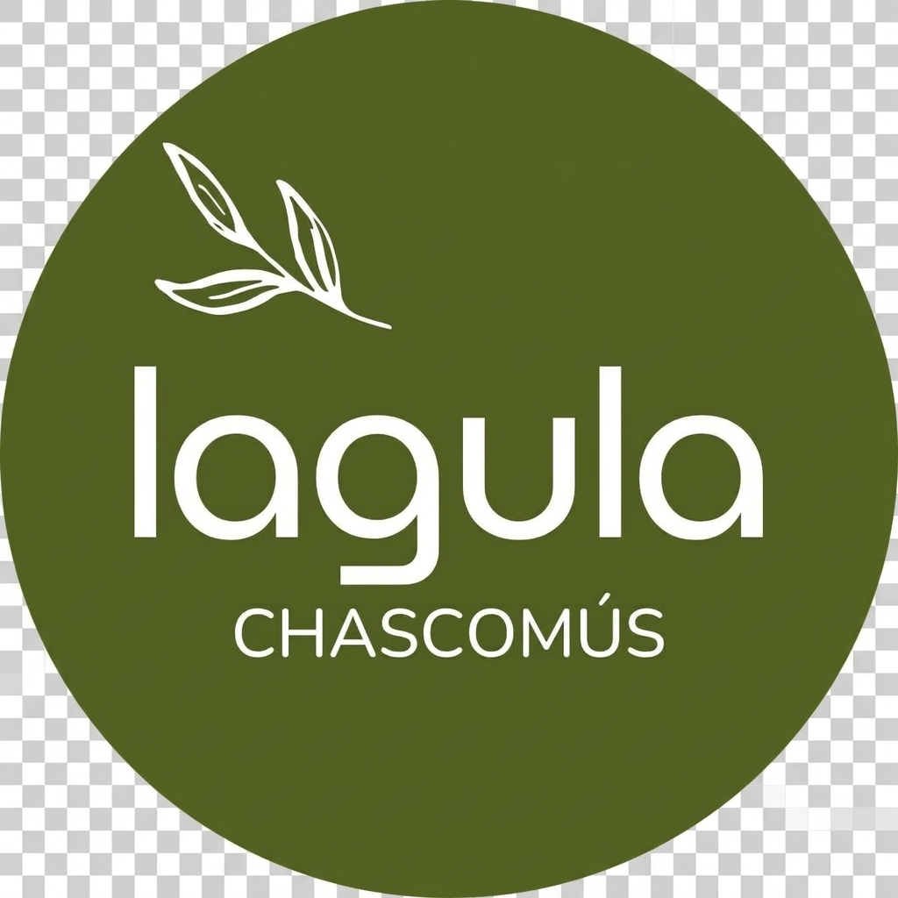
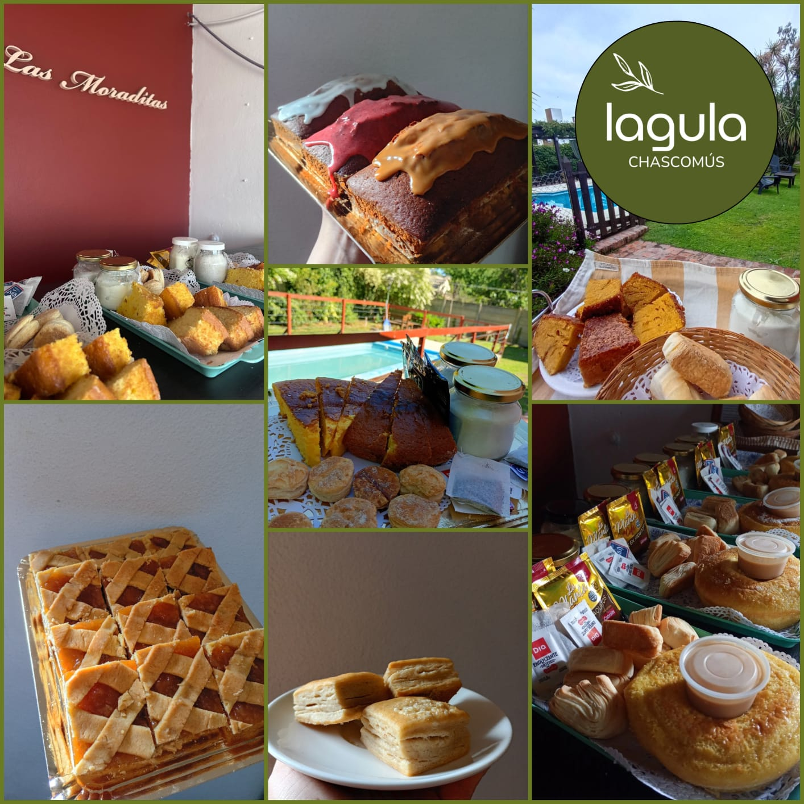
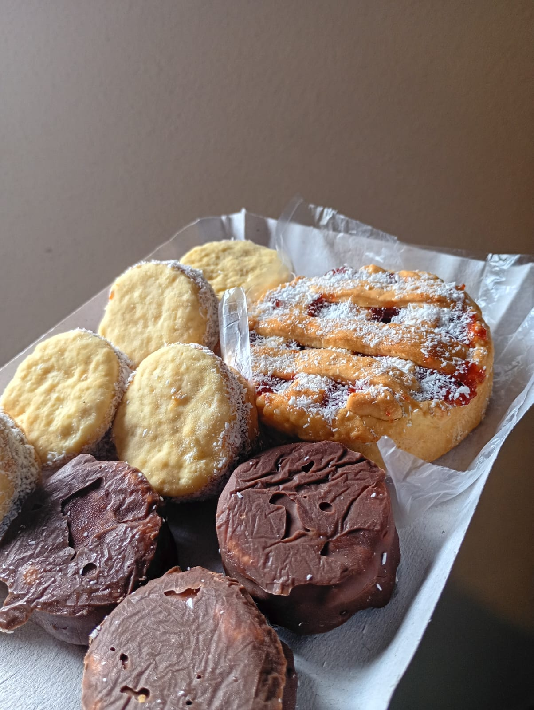
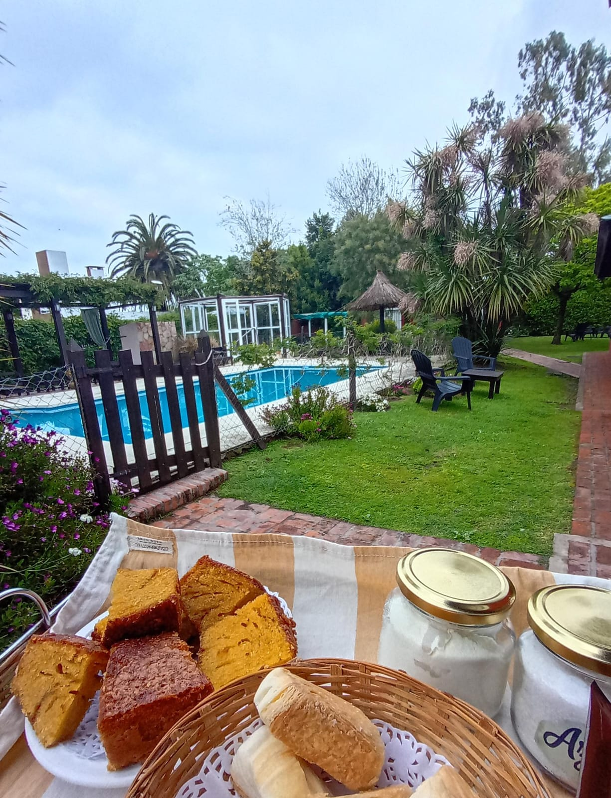
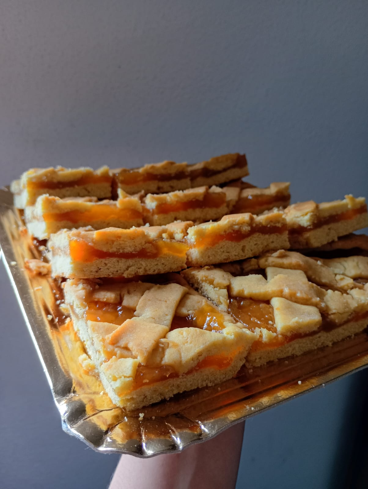
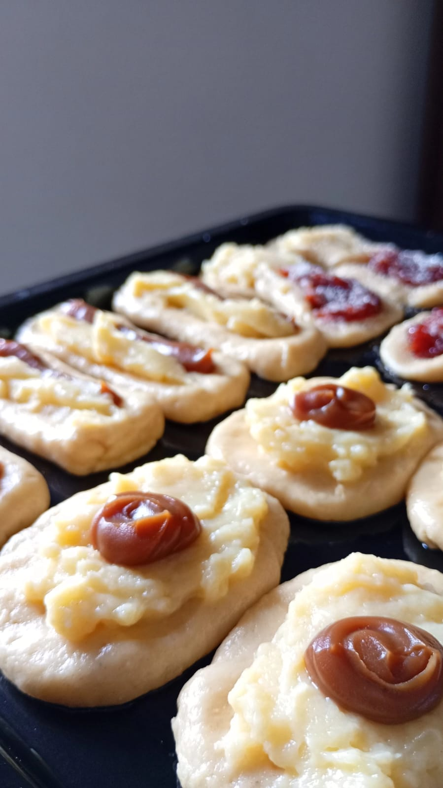
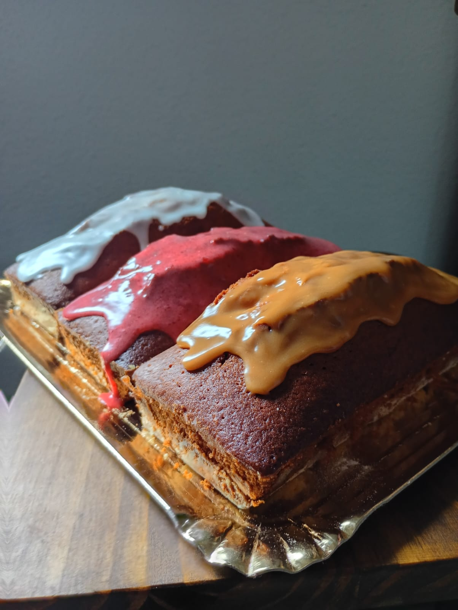
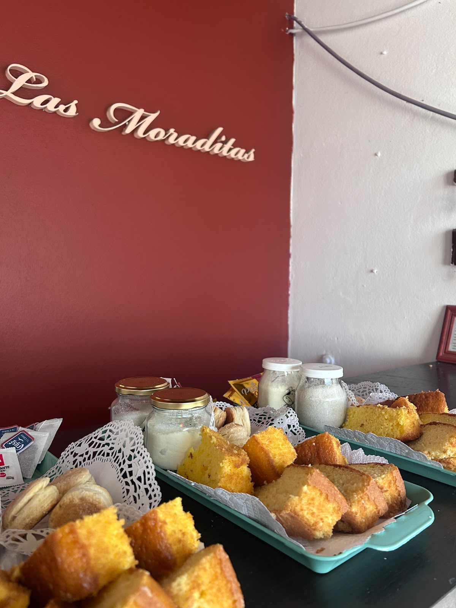
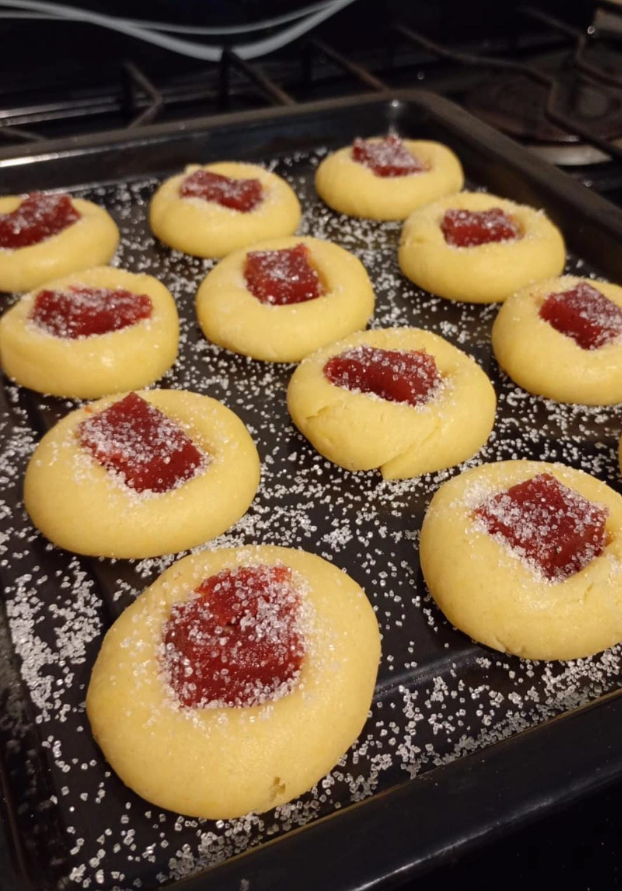

Contacto 💬Sabores caseros para disfrutar frente a la laguna de Chascomús.
Todo empezó con una idea simple: que quienes visitan la laguna no tengan que preocuparse por el desayuno o la merienda. Quería ofrecer ese momento de pausa, con productos frescos y caseros, directamente en la puerta de tu cabaña.
Hoy me dedico a armar bandejas materas y meriendas completas pensadas para compartir, descansar y disfrutar sin complicaciones.


Ideal para el mate frente al lago. Incluye variedad de facturas, pastafrola, budín y lo que necesites.

Nos encargamos de entregar bandejas en las cabañas en el horario que nos indiques. Incluyen té, café, edulcorante, azúcar, leche en polvo, y comidas surtidas cada día (budines, pastafrolas, facturas, bizcochos, alfajores). ¡Se adaptan a tus cabañas!

Nosotros cocinamos para la cantidad deseada de huéspedes y vos entregas las bandejas. Te llevamos bandejas surtidas a domicilio para que armes los desayunos (todos los productos son aptos para el freezer).



